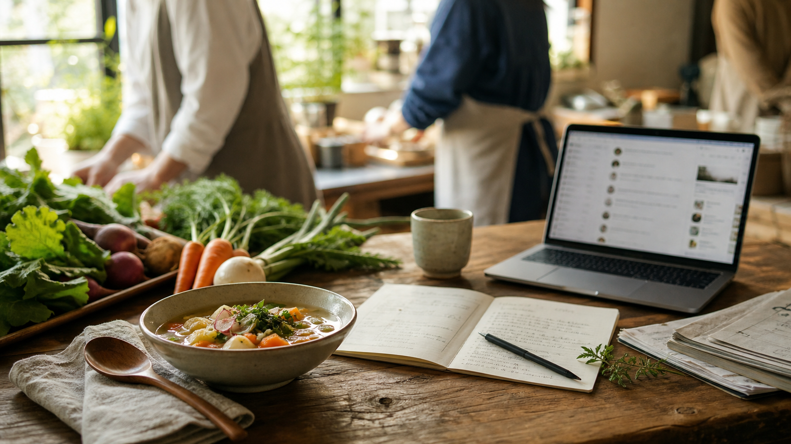

肩書きを渡す
何者として関わるのかを明確にします。農家ストーリー編集部員、メニュー実験係、当日ミニ店長など、役割名から参加しやすくします。
2026年9月後半 1DAYポップアップ実証
お手伝い募集ではなく、持ち場を持つ人の募集です。農家さんの食材とストーリーを来場者へ届けるために、企画、制作、発信、当日運営、事後レポートで関わってくれる仲間を募集します。
募集の基本方針
カフェMetagriでは、農家さんの食材とストーリーを来場者に届けるため、役割ベースの共創者募集を行います。全体責任を背負う必要はありません。自分がよくできる範囲で、小さな持ち場を持つ形です。

何者として関わるのかを明確にします。農家ストーリー編集部員、メニュー実験係、当日ミニ店長など、役割名から参加しやすくします。
全部を任せるのではなく、事前だけ、当日だけ、2時間だけ、発信だけなど、無理なく関われる単位にします。
POP、SNS投稿、レポート、当日記録、クレジット掲載など、協力の跡が残るようにします。
どちらか一方だけでも参加できます。気になる役割があれば、Discordの募集投稿でリアクションしてください。役割に応じたロールを付与し、該当チャンネルで詳細を案内します。
農家さんの想いや食材の背景を、来場者が応援したくなる言葉に編集します。
スープやドリンクを、無理なく提供できて食材が伝わる形に整えます。
受付、注文、POP、QR、アンケートまでの流れを設計します。
進捗や感謝を、Discord、SNS、活動報告で届けます。
当日の数字、声、写真、改善点を次回につながる記録にします。
2026年9月後半の本番に向けて、2時間単位でも関われる役割を用意します。食品衛生、会計、会場判断は運営側が責任を持ちます。
担当時間帯ごとに、場の空気と来場者との接点をつくります。
初めて来る人が安心して入店できるように案内します。
スープ、ドリンク、試食を落ち着いて安全に提供できるよう支えます。
POPや展示を通じて、食材の背景や農家さんの想いを案内します。
当日の様子を、活動レポートや次回改善に使える形で残します。
募集投稿に並ぶ役割へリアクションすると、対応するロールを付与します。詳細な稼働可能日や公開可否は、必要に応じてフォームで確認します。
Metagri研究所Discord内のカフェMetagri募集投稿を確認します。
気になる役割へリアクションします。複数選択も可能です。
運営側で役割ロールを付与し、該当チャンネルへ案内します。
担当範囲、相談ライン、成果物、確認が必要なことを確認します。
事前だけ、当日だけ、2時間だけでも、持ち場を持って関わります。
協力内容に応じて、クレジット掲載、限定試食、参加証NFT、Discordロール、振り返り会参加などを用意します。
イベントページ、SNS、実施後レポートなどに協力者名や団体名を掲載します。
POP、写真、SNS投稿、レポートなどを、ポートフォリオ掲載可能な形で扱います。
メニュー開発、農家ストーリー、来場者アンケート結果、振り返り会を共有します。
肩書きを持った人数、事前オンライン協力者数、当日リアル運営協力者数、POPやSNSなどの成果物数、当日後に次回も関わりたいと答えた人数を見ます。
Discordで役割を選ぶ